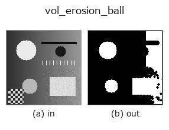

3d op• データ種: volume → volume
• 呼び出し: fullseye.apply(img, "vol_erosion_ball", a=0.5, b=0.5) (2-D は 1 画像 + 2 スカラつまみ a,b∈[0,1] のモデル)

*図は合成の入力 128×128 で実際に走らせた出力。左が入力、右が出力。点群は上から見た散布(明るさ = z)、1-D 列は折れ線、体積は z 方向の最大値投影、動画は中央フレーム、複素画像は振幅、絵にならない返り値は値そのもの。*
つまみ a を振る(0.1 / 0.5 / 0.9、もう一方は既定):
▸ vol_erosion_ball: knob a sweep (docs site)
*つまみ b は出力を変えない(実測: 0.1 / 0.5 / 0.9 で同一)。*
段階(前置きの op → この op。左から順):
▸ vol_erosion_ball: stages (docs site)
別の画像でも(合成シーン / 写真 / 硬貨。上段が入力、下段がその出力。つまみは既定):
▸ vol_erosion_ball: other inputs (docs site)
動き(GIF: フレーム / 視点 / スライスを順に。静止の図が完成形で、GIF は補助):
球形構造要素による 3D 二値侵食。対応する HALCON op は指定されていない。
`a が球の半径を 1〜4（1+int(3a)）に振る。b は未使用。球の定義は _vol_dilation_ball` と同じ。
• gallery2d_physics_alife_3d ファミリ ガイド
• サンプルデータ カタログ(DL URL / ライセンス) — 2-D は skimage.data(BSD/public)+ 合成、3-D は実データ源(Stanford/PDS 等)の DL URL。
• 演算子の来歴・参考文献 — この op 族の元になった研究/手法の出典。
• アルゴリズムの正典(著者・年)と用途は上記ファミリ使い方ガイドに記載。
下のプログラムは実際に走ることを確かめてある(図と同じ入力)。Studio のヘルプではこのブロックがボタンになり、その場で読み込んで実行できる。
img_to_volume 0.50 0.50 vol_erosion_ball 0.50 0.50
▸ Load this pipeline · Load & run
• gallery2d_physics_alife_3d — py -3.11 examples/gallery2d_physics_alife_3d.py
volume を入力に取れる)identity · vol_gaussian · vol_median · vol_erode · vol_dilate · vol_threshold · vol_reg_dilate · vol_reg_erode
3d)vol_gaussian · vol_median · vol_erode · vol_dilate · vol_threshold · vol_reg_dilate · vol_reg_erode · vol_dilation_ball
*Provenance: ops.py — 2D operator registry. この per-op ノートは tools/opdocs.py md が自動生成(手編集しない)。*
© 2026 Kazufumi Furuse — Fullseye operator documentation. Licensed under Apache-2.0.
{kind=link}
{kind=link}
{kind=link}